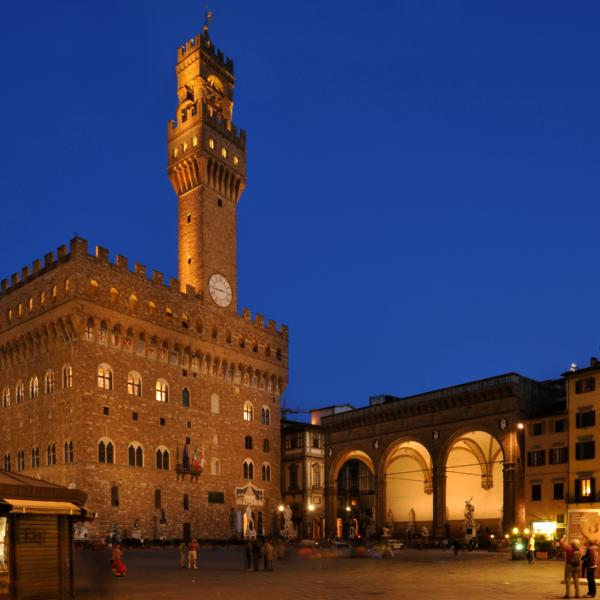
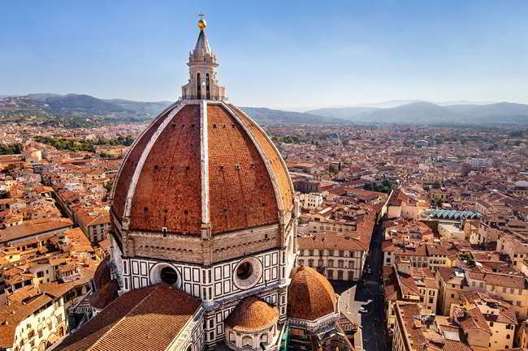
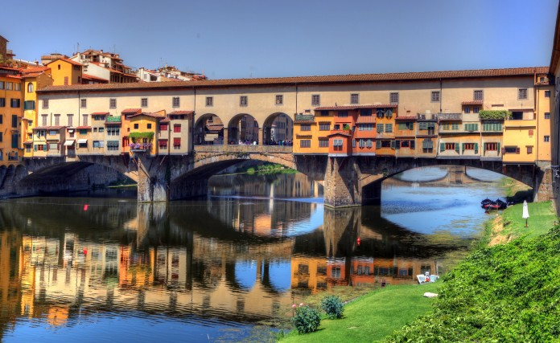

Piazza della Signoria è la piazza centrale di Firenze, sede del potere civile e cuore della vita
sociale della città. A forma di L, si trova nella parte centrale della Firenze medievale, a sud della
Cattedrale di Santa Maria del Fiore. In passato ha assunto diversi nomi, come piazza dei Priori o
piazza del Granduca.Situata nel centro storico, piazza della Signoria è sempre stata il centro
politico e della vita civile di Firenze. Piazza della Signoria è raggiungibile a piedi in 10 minuti
dalla stazione ferroviaria di Santa Maria Novella ed è annessa agli Uffizi, Palazzo Vecchio e
Ponte Vecchio. Dopo varie trasformazioni ed a seguito della realizzazione degli Uffizi (1560 -
1580) la Piazza della Signoria assunse l'attuale aspetto; un grande impatto visuale correlato da
varie sculture e palazzi. Al centro della piazza è collocato il monumento equestre di Cosimo I
(opera in bronzo del Giambologna del 1598) e la Fonte di Piazza o Fontana del Nettuno di
Bartolomeo Ammannati e Giambologna del 1575 eretta accanto a Palazzo Vecchio in occasione
della costruzione di un nuovo acquedotto.

La cattedrale metropolitana di Santa Maria del Fiore, conosciuta comunemente come duomo di
Firenze, è la principale chiesa fiorentina, simbolo della città ed uno dei più famosi d'Italia;
quando fu completata, nel Quattrocento, era la più grande chiesa al mondo, mentre oggi è
ritenuta la terza in Europa dopo San Pietro a Roma e il Duomo di Milano[1]. Essa sorge sulle
fondamenta dell'antica cattedrale di Firenze, la chiesa di Santa Reparata, in un punto della città
che ha ospitato edifici di culto sin dall'epoca romana. La costruzione del Duomo, ordinata dalla
Signoria fiorentina, inizia nel 1296 e termina dal punto di vista strutturale soltanto nel 1436. I
lavori iniziali furono affidati all'architetto Arnolfo di Cambio per poi essere interrotti e ripresi
numerose volte nel corso dei decenni (da Giotto, Francesco Talenti e Giovanni di Lapo Ghini).
Al completamento della cupola del Brunelleschi seguì la consacrazione da parte di papa Eugenio
IV il 24 marzo del 1436. La dedica a Santa Maria del Fiore avvenne in corso d'opera, nel 1412.

Il Ponte Vecchio è uno dei simboli della città di Firenze ed uno dei ponti più famosi del mondo.
Attraversa il fiume Arno circa 150 metri a valle dell'area in cui il fiume presenta naturalmente
uno dei punti in cui l'alveo è più stretto all'interno della città di Firenze nel suo tratto a monte
delle Cascine. L'area in questione è ai Canottieri sotto gli Uffizi. Nell'antichità esisteva un
guado.Ponte Vecchio è uno dei ponti più vecchi di Firenze, forse anche il più vecchio. All'origine
era circondato da quattro torri e comprendeva tre campate a tutto sesto. È stato poi ricostruito da
Taddeo Gaddi in seguito ad un'alluvione che ha causato la sua distruzione. Dopo la ricostruzione
il ponte divenne a sesto ribassato. Al giorno d'oggi è molto famoso e meta di numerosi turisti.
